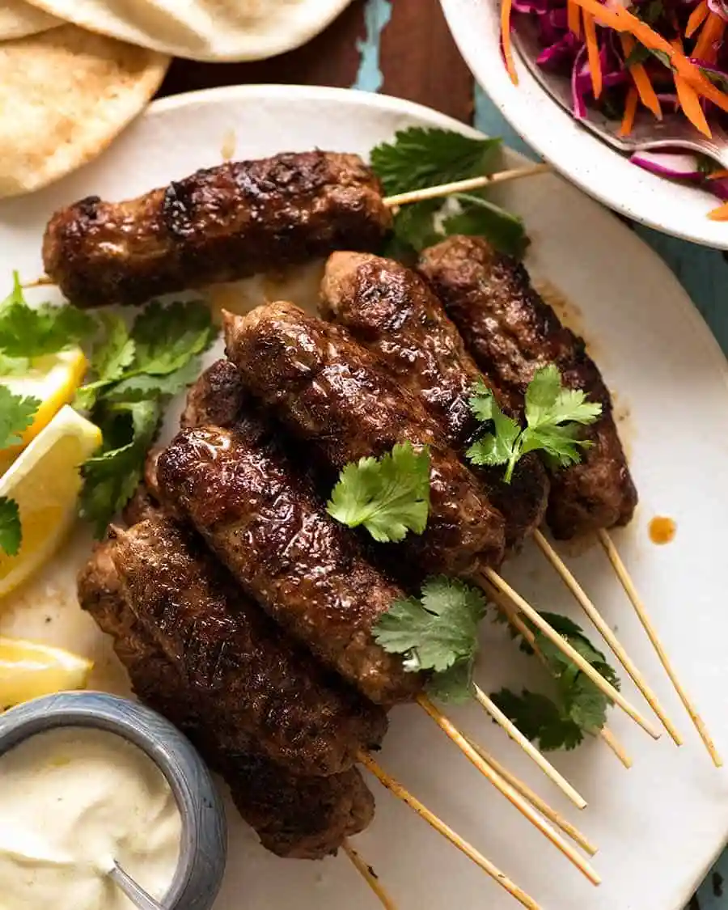

THAI GREEN CURRY
The curry paste in this recipe is great for freezing. This is quite a mild curry and works best with light coconut milk rather than normal - it has a thinner consistency. Best served with white sticky rice and grilled, spiced okra, with some sliced chilli and Thai basil on top.

CHICKEN FAJITAS
A lot of the ingredients in this recipe are quite specialist, but easy to buy in bulk from Amazon and really make it taste more authentic. Grilling with peppers is also a nice option to add some sweetness. Rest the chicken for 5-10 mins if you can to keep it juicy.

CHICKEN SATAY
This recipe is originally from Madhur Jaffrey’s “Far Eastern Cookery” book, published in 1991. It asks for the chicken to be barbecued over a grill, but an oven will work in a pinch too. The chicken is best left marinating for as long as possible.

CHOCOLATE CAKE
A chocolate cake recipe made famous by Uncle Gary, the cocoa in this recipe can be subtituted for any flavour, e.g. coffee, cinnamon, spices etc. I would recommend at least baking the recipe 2x so you can have at least two sandwiches, and add butter cream.

RED PESTO
A simple recipe for a tasty and (relatively) healthy red pesto - it's normally ready-to-eat in 10 minutes! This pesto is particularly good served on toasted bread with tomatoes to make brushcetta, but is also nice with fresh pasta and parmesan.

LAMB KOFTAS
A couple of the ingredients for this recipe are a bit hard to find, but available at most Turkish and Greek supermarkets. These koftas are best cooked over a grill or barbecue and served with copious amounts of yoghurt, soft, warm pitta and a tomato and onion salad.